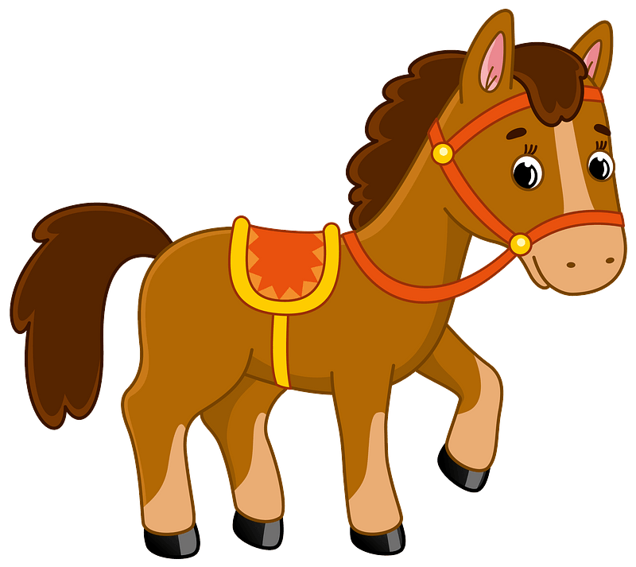

Rat
The rat tends to be more quick-witted with a keen observation and foresight.
-
Strengths
- Savvy
- Quick-witted
- Versatile
-
Weaknesses
- Captious
- Undetermined
- Stubborn
In 2024, They may do a good job using their talent and wisdom in thier jobs. It can be a hopeful year for the singles as they may meet their true love and start dating. The health fortune prediction is not very good. They’d better drink less alcohol, practice more and eat healthily.
Ox

The faithful character of the ox helps them to get trust from their leaders and friends.
-
Strengths
- Loyal
- Responsible
- Logical
-
Weaknesses
- Conservative
- Stubborn
- Overcautious
Their career and wealth luck is the best, as the prediction indicates they are likely to approach a higher position in their workplace and earn more. The horoscope in term of health is the worst, so they'd better care more about their body.
Tiger
Tigers are such persons who dare to love and hate.
-
Strengths
- Brave
- Passionate
- Optimistic
-
Weaknesses
- Rebellious
- Overconfident
- Stubborn
Tigers will be both blessed by good fortune and annoyed by misfortune. In terms of wealth, they would live and abundant life generally; as long as they are not greedy when making investments.
Rabbit
Rabbits are gentle and approachable and have a decent, noble and elegant manner.
-
Strengths
- Gracious
- Alert
- Kind-hearted
-
Weaknesses
- Vain
- Emotionally Unstable
- Satisfied with the status-quo
Rabbit's should make efforts to take care of themselves. Keep away from conflicts among different team leaders in the workplace and don't make blind and impulsive investments.
Dragon
Dragons are full of fighting spirit and strength.
-
Strengths
- Sincere
- Ambitious
- Independent
-
Weaknesses
- Easily give up
- Little willpower
- Unwilling to admit mistakes
Dragons may encounter more setbacks and difficulties than usual. Be cautious in the workplace and don't try to make big changes. They should also pay attention to their mental and physical health. Reduce pressure and exercise regularly.
Snake
Snakes easily attract others for their mysterious character and graceful behavior.
-
Strengths
- Calm
- Talented
- Perceptive
-
Weaknesses
- Indifferent
- Skeptical
- Obstinate
For 2024, Do not waste money on unnecessary articles and dream of being rich through investments or other means. It's possible for snakes to make some progress in their career, as long as they don't offend coworkers or higher ups.
Horse
Horses are more lively, energetic, courageous, and enthusiastic about people and life.
-
Strengths
- Perceptive
- Cheerful
- Popular
-
Weaknesses
- Overly ambitious
- Overconfident
- Sometimes too sophisticated
The fortune for horses is qutie good in many aspects, except in terms of health. The auspicious predictions are that their income from work would be steady, because of their good performance. Horses shouldn't dream of being rich through investments.
Sheep
Of all the zodiac, the sheep is the most gentle and soft.
-
Strengths
- Sociable
- Considerate
- Sympathetic
-
Weaknesses
- Impractical
- Hesitating
- Negative
Monkey
Monkey signs are born to have brilliant minds.
-
Strengths
- Active
- Humorous
- Just
-
Weaknesses
- Braggart
- Tricky
- Vainglorious
Monkey's will encounter some great chances to male a big progress at work or develop their own business. They may get caught up in an accident and get some light injuries, which would cause a loss in their wealth, too.
Rooster
Roosters are good at making friends or adjusting themselves into a new environment.
-
Strengths
- Outgoing
- Smart
- Independent
-
Weaknesses
- Impatient
- Boastful
- Egoistic
Roosters will have great luck in terms of career and wealth. As long as they make efforts at work, they could get a big payback. They may have a promotion, gain a bonus or recieve a raise in wages. Their health fortune is just so-so.
Dog
The biggest characteristics of dog signs are loyalty and honesty.
-
Strengths
- Brave
- Clever
- Lively
-
Weaknesses
- Stubborn
- Conservative
- Emotional
It will not be a lucky year for dog signs. They won't get more income, but will maintain a stable salary through hard work. They will face twists and turns and great pressure at work. In health, they are likely to suffer from some slight illnesses.
Pig
Pig signs are always diligent, upright and never pretentious.
-
Strengths
- Sincere
- Compassionate
- Diligent
-
Weaknesses
- Self-indulgent
- Easily influenced
- Realistic
The fortune for pig signs is pretty good as a whole. Through work performance, their efforts will be rewarded, so they could gain ample income this year. They could get a promotion or increase in salary.